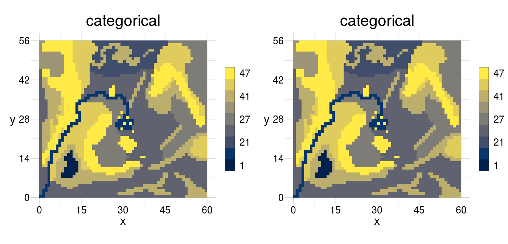
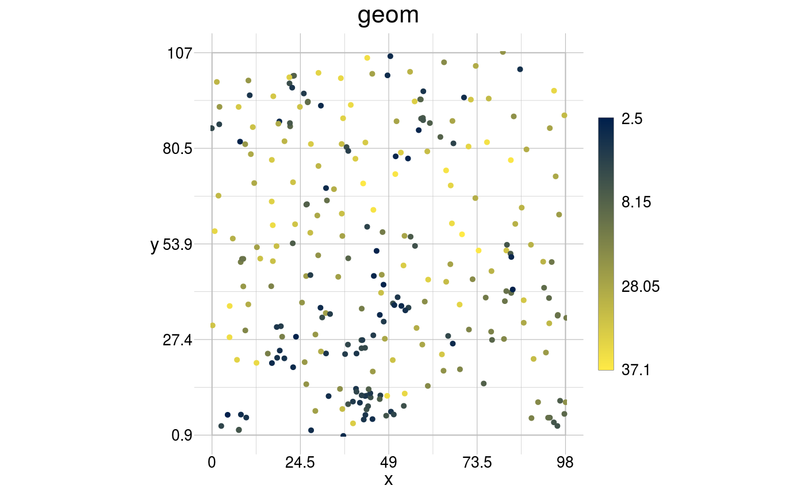
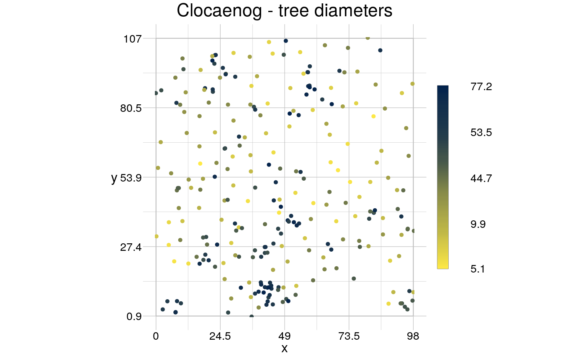
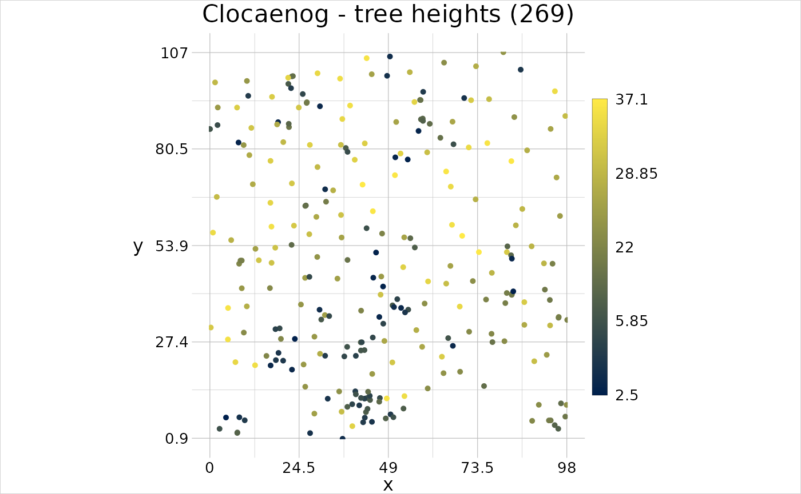
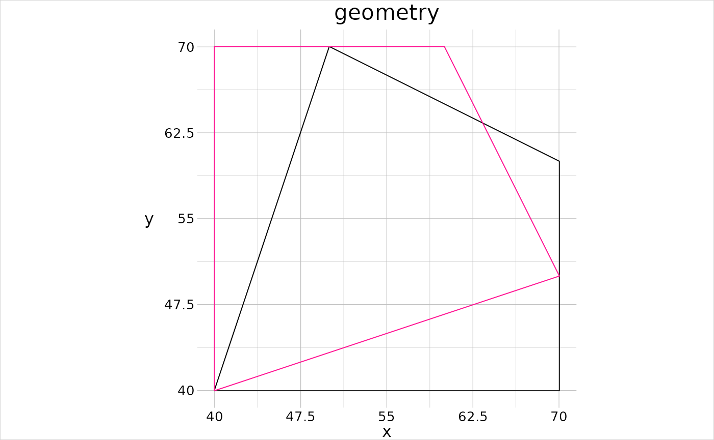
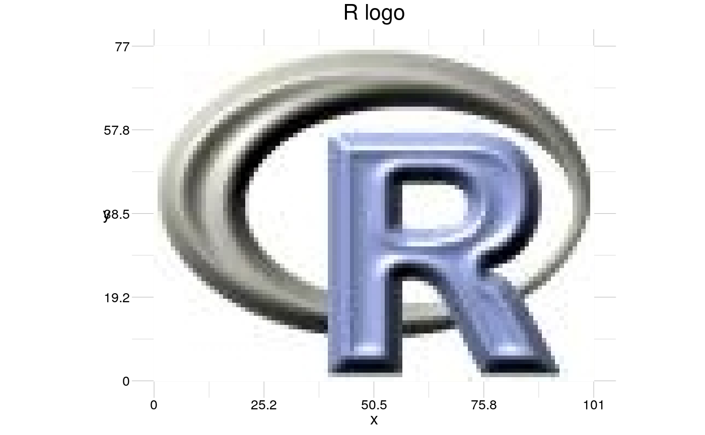
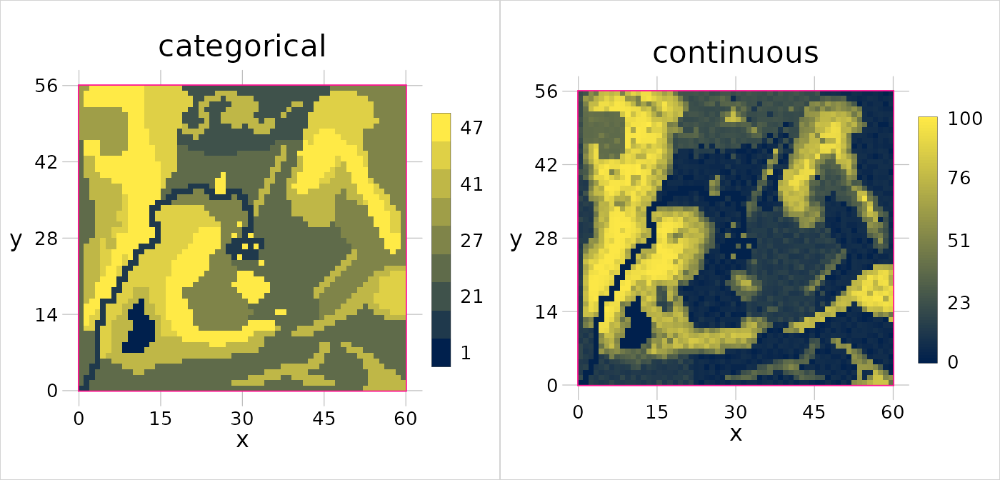
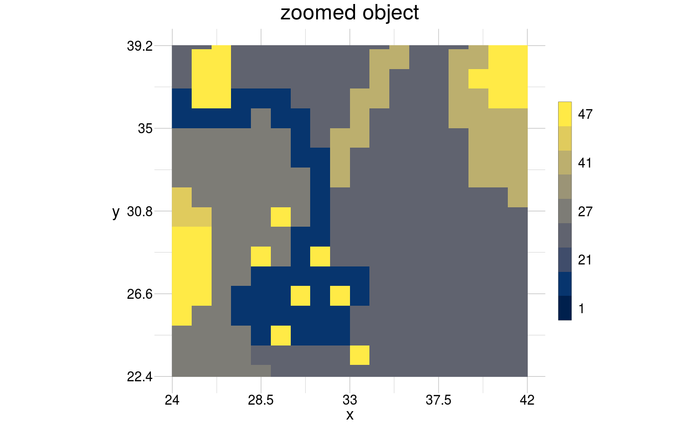
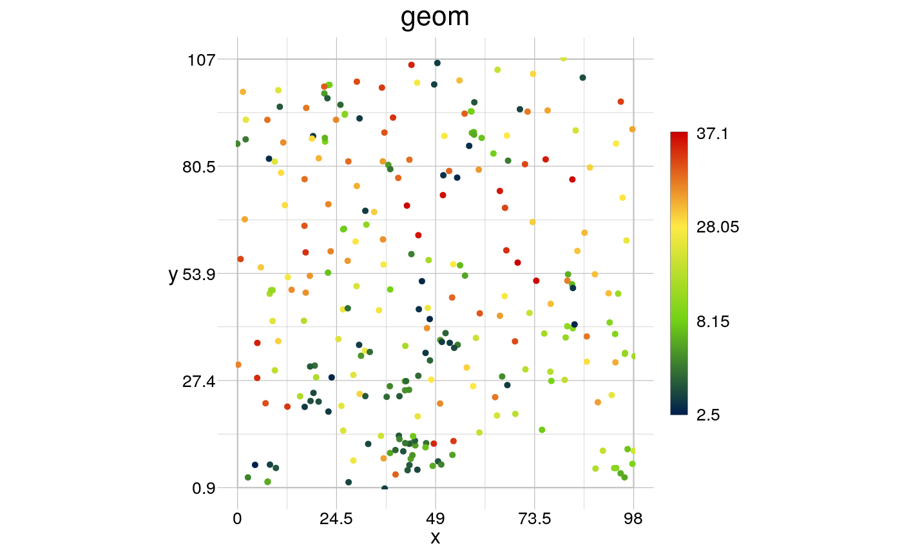

Introduction
The geometr package provides tools that generate and process easily accessible and tidy geometric shapes (of class geom). Moreover, geometr aims to improve interoperability of geometric classes. One could argue that spatial classes are merely a special case of geometric classes, where the points’ coordinates refer to real locations on the surface of the earth, specified in further detail by the coordinate reference system (crs). For ordinary geometric shapes (such as squares or circles), the coordinate (reference) system is the cartesian coordinate system. geometr makes the generalisation to treat all geometric and spatial classes in the same way, and thus both of them are termed geometric objects/classes here.
Geometric classes contain typically a collection of points that outline the geometric shapes or features. A feature in geometr is defined as a set of points that form no more than one single unit of a given feature type (point, line and polygon) and, in contrast to the simple features standard, there are no multi-* features. Sets of geometric objects that belong together beyond their geometric connectedness are assigned a common group, that can have its own group attributes (more on this in the chapter Attributes of a geom). Features are characterised by a location, some coordinate (reference) system, and various other properties or metadata. Most geometric classes are conceptually quite similar, yet a common, interoperable standard lacks for accessing and modifying features, their points or the metadata.
This vignette outlines in detail first how geometr improves interoperability, then it describes the datastructure of a geom (the geometric class that comes with geometr), how different feature types are cast into one another, shows how to visualise geometric objects and eventually gives a short introduction of the tools that come with this first version of geometr.
Interoperability
Interoperable software can easily exchange information with other software, which can be achieved by providing the output of functionally similar operations in a common arrangement or format. This principle is not only true for software written in different languages, but can also apply to several packages within the R ecosystem. R is an open source environment which means that no single package or class will ever be the sole source of a particular datastructure and this is also the case for spatial and other geometric data.
Interoperable data is data that has a common arrangement and that uses terms from the same ontology, resulting ideally in semantic interoperability. As an example, we can think of the extent of a geometric object. An extent reports the minimum and maximum value of all dimensions an object resides in. There are, however, several ways in which even this simple information can be reported, for example as vector or as table and with or without names. Moreover, distinct workflows provide data so that the same information is not at the same location or with the same name in all structures, e.g., the minimum value of the x dimension is not always the first information and is not always called ‘xmin’.
The following code chunk exemplifies this by showing various functions, which are all considered standard in R to date, that derive an extent from specific spatial objects:
library(sf)
#> Linking to GEOS 3.5.1, GDAL 2.2.2, PROJ 4.9.2
nc_sf <- st_read(system.file("shape/nc.shp", package="sf"))
#> Reading layer `nc' from data source `/home/steffen/R/x86_64-pc-linux-gnu-library/3.6/sf/shape/nc.shp' using driver `ESRI Shapefile'
#> Simple feature collection with 100 features and 14 fields
#> geometry type: MULTIPOLYGON
#> dimension: XY
#> bbox: xmin: -84.32385 ymin: 33.88199 xmax: -75.45698 ymax: 36.58965
#> epsg (SRID): 4267
#> proj4string: +proj=longlat +datum=NAD27 +no_defs
st_bbox(nc_sf)
#> xmin ymin xmax ymax
#> -84.32385 33.88199 -75.45698 36.58965
library(sp)
nc_sp <- as_Spatial(nc_sf)
bbox(nc_sp)
#> min max
#> x -84.32385 -75.45698
#> y 33.88199 36.58965
library(raster)
ras <- raster(system.file("external/test.grd", package="raster"))
extent(ras)
#> class : Extent
#> xmin : 178400
#> xmax : 181600
#> ymin : 329400
#> ymax : 334000st_bbox() provides the information as a named vector and presents first minimum and then maximum values of both dimensions, bbox() provides a table with minimum and maximum values in columns and extent() provides the information in an S4 object that presents first the x and then the y values. Neither data structures, nor names or positions of the information are comparable.
For a human user the structure of those information might not matter, because we recognise, in most cases intuitively, where which information is to be found in a datastructure. In the above case it is easy to recognise how the combination of column and rownames (of bbox()) refers to the already combined names (of st_bbox() or extent()). However, this capacity of humans to recognise information relative to the context needs to be programmed into software, for it to have that ability. Think, for example, of a new custom function that is designed to extract and process information from an arbitrary spatial input, i.e., without knowing in advance what spatial class the user will provide. This would require an extensive code-logic to handle all possible input formats, complicated further by classes that may become available only in the future.
geometr improves interoperability in R for geometric and thus spatial classes by following the Bioconductor standard for S4 classes. Here, getters and setters are used as accessor functions, and as pathway to extract or modify information of a given data structure. geometr thus provides getters that provide information in identical arrangement from a wide range of classes, and likewise setters that modify different classes in the same way, despite those classes typically need differently formatted input, arguments and functions. The following code chunk shows how different input classes yield the same output object.
library(geometr)
myInput <- nc_sf
getExtent(x = myInput)
#> Registered S3 method overwritten by 'cli':
#> method from
#> print.boxx spatstat
#> # A tibble: 2 x 2
#> x y
#> <dbl> <dbl>
#> 1 -84.3 33.9
#> 2 -75.5 36.6
myInput <- nc_sp
getExtent(x = myInput)
#> # A tibble: 2 x 2
#> x y
#> <dbl> <dbl>
#> 1 -84.3 33.9
#> 2 -75.5 36.6
myInput <- ras
getExtent(x = myInput)
#> # A tibble: 2 x 2
#> x y
#> <dbl> <dbl>
#> 1 178400 329400
#> 2 181600 334000The output of the getters provided by geometr is tidy, i.e., it provides variables in columns and observations in rows, and it is interoperable, i.e., it provides the same information in the same location of the output object, with the same names. This ensures, amongst other advantages, that a custom function that processes geometric information, requires merely one very simple row of code to extract those information from a potentially wide range of distinct classes.
Description of the class geom
geometr comes with the S4 class geom. geom is a geometric (spatial) class that has been primarily developed for its interoperability and easy access.
This means also here that all objects of this class are structurally the same, that no slots are removed or added when modifying an object and that all properties are labelled with the same terms in each object of that class. This interoperability is true for objects representing point, line or polygon features, for objects that contain a single or several features and for objects that are either merely geometric or indeed spatial/geographic because they contain a coordinate reference system. A geom contains, moreover, only direct information, i.e., such information that can’t be derived from other of its information. A prominent example is the extent, which is not stored within a geom but within many other spatial classes (in R), and which can very simply be derived from the coordinate values of the points that make up the geometry.
Create a geom
A geom can be created simply by transforming it from another class (that is, any class for which a method has been defined), or by using one of the geometry shape functions that are labelled gs_* in geometr.
# transform from class sf
(nc_geom <- gc_geom(input = nc_sf))
#> geom polygon
#> 108 features | 2529 points
#> crs +proj=longlat +datum=NAD27 +no_defs
#> attributes (features) AREA, PERIMETER, CNTY_, CNTY_ID, NAME, FIPS, FIPSNO, CRESS_ID, BIR74, ...
#> tiny map 36.59
#> ◌ ○ ◌ ○
#> ○ ○ ○ ○
#> ◌ ◌ ○ ◌
#> -84.32 ◌ ◌ ◌ ◌ -75.46
#> 33.88
# make "by hand"
library(tibble)
coords <- tibble(x = c(40, 70, 70, 50),
y = c(40, 40, 60, 70))
(somePoints <- gs_point(anchor = coords))
#> geom point
#> 4 features | 4 points
#> crs cartesian
#> attributes --
#> tiny map 70
#> ◌ ◎ ◌ ◌
#> ◌ ◌ ◌ ◎
#> ◌ ◌ ◌ ◌
#> 40 ◎ ◌ ◌ ◎ 70
#> 40From these examples we learn something more about objects of class geom. nc_geom is made up of 108 polygon features (with 2529 points), has a coordinate reference system (crs) and a set of (feature) attributes. The attributes’ values are not shown by the print method of a geom, which is a more compact visualisation of the important information. Moreover, there is a “tiny map” that shows where the points of the respective geom are concentrated, which gives a rough but quick overview of the shape of the object. If there is less than 1/16th of all points in a section of the map, a ◌ is shown, for more than 1/16th but less than 1/8th this is ○, for more than 1/8th but less than 1/4th ◎ and for sections with more than 1/4th of points, this is ◉.
aPoly is only made up of one feature with 5 points and a cartesian coordinate system. As a matter of fact, any geom that has no crs assigned is assumed to be a mere geometric object of which the values are valid for a cartesian coordinate system.
How are polygons handled?
You might wonder why it shows 5 points for aPoly, while only 4 have been defined. This is due to how polygons are stored in a geom. A polygon is by definition a two-dimensional plane, in contrast to a line that has only one dimension, its length, and a point, which is dimensionless. A polygon and a line can be made up of the same points and a polygon is indeed nothing more than a sequence of lines (a path) that outlines the shape of the polygon. To then distinguish a line and polygon with the same points, it can be defined that a polygon must have duplicate start and end points, which would constitute a closed path.
aPoly <- gs_polygon(anchor = coords)
getPoints(x = somePoints)
#> # A tibble: 4 x 3
#> x y fid
#> <dbl> <dbl> <int>
#> 1 40 40 1
#> 2 70 40 2
#> 3 70 60 3
#> 4 50 70 4
getPoints(x = aPoly)
#> # A tibble: 5 x 3
#> x y fid
#> <dbl> <dbl> <int>
#> 1 40 40 1
#> 2 70 40 1
#> 3 70 60 1
#> 4 50 70 1
#> 5 40 40 1Polygons may also have holes (and islands therein), for example a park with a pond that has a little island in the middle. Such cases are of course also possible with a geom and the only thing to consider is that the outer (closed) ring must be given as first ring. All rings that are supposed to be nested within this ring must themselves be closed paths, but their order does not matter. Moreover, when building a polygon with hole in geometr, the rotation direction described by the sequence of the points does not matter. Whether part of a polygon is “inside”, and thus whether a closed path describes a hole or not, is determined by the code-logic of the functions processing polygons.
pond <- tibble(x = c(30, 30, 80, 80, 30),
y = c(30, 80, 80, 30, 30),
fid = 1)
island <- tibble(x = c(60, 65, 65, 60, 60),
y = c(45, 45, 50, 50, 45),
fid = 1)
temp <- rbind(pond, island, getPoints(aPoly))
perforatedPoly <- gs_polygon(anchor = temp)
visualise(perforatedPoly, fillcol = fid)
Attributes of a geom
You may also be wondering why nc_geom has 108 features, while nc_sf has actually 100 features. nc_sf consists of 100 “MULTIPOLYGONS” where in fact only a small set of them are composed of several polygons. This is due the definition of simple features, where one “simple” feature can be of a multi* type that comprises several closed paths in the same object and which would thus be called MULTIPOLYGON. Yet, an object can also contain only a single closed path and still have the feature type MULTIPOLYGON. In geometr these inconsistencies are avoided because they require a lot of extra code logic that is, in my opinion, not worth the supposed flexibility. Hence, a geom breaks down multi*-features into their distinct closed paths, into “simpler features”, so to speak.
This, however, requires that the togetherness of multi*-features has to be captured in another way. A set of features can be regarded as belonging together when they share attributes, such as a group of islands that form a nation. To capture attributes of sets or groups of features, a geom has an additional attribute table, one that captures those group attributes. Moreover, also the list of points is treated as a separate, third attribute table, for attributes that only the points, but not the features (groups of points) have.
All three attribute tables can be accessed with specific getters.
getPoints(x = nc_geom)
#> # A tibble: 2,529 x 3
#> x y fid
#> <dbl> <dbl> <int>
#> 1 -81.5 36.2 1
#> 2 -81.5 36.3 1
#> 3 -81.6 36.3 1
#> 4 -81.6 36.3 1
#> 5 -81.7 36.4 1
#> 6 -81.7 36.5 1
#> 7 -81.7 36.5 1
#> 8 -81.7 36.6 1
#> 9 -81.3 36.6 1
#> 10 -81.3 36.5 1
#> # … with 2,519 more rows
getFeatures(x = nc_geom)
#> # A tibble: 108 x 16
#> fid gid AREA PERIMETER CNTY_ CNTY_ID NAME FIPS FIPSNO CRESS_ID
#> <int> <int> <dbl> <dbl> <dbl> <dbl> <fct> <fct> <dbl> <int>
#> 1 1 1 0.114 1.44 1825 1825 Ashe 37009 37009 5
#> 2 2 2 0.061 1.23 1827 1827 Alle… 37005 37005 3
#> 3 3 3 0.143 1.63 1828 1828 Surry 37171 37171 86
#> 4 4 4 0.07 2.97 1831 1831 Curr… 37053 37053 27
#> 5 5 4 0.07 2.97 1831 1831 Curr… 37053 37053 27
#> 6 6 4 0.07 2.97 1831 1831 Curr… 37053 37053 27
#> 7 7 5 0.153 2.21 1832 1832 Nort… 37131 37131 66
#> 8 8 6 0.097 1.67 1833 1833 Hert… 37091 37091 46
#> 9 9 7 0.062 1.55 1834 1834 Camd… 37029 37029 15
#> 10 10 8 0.091 1.28 1835 1835 Gates 37073 37073 37
#> # … with 98 more rows, and 6 more variables: BIR74 <dbl>, SID74 <dbl>,
#> # NWBIR74 <dbl>, BIR79 <dbl>, SID79 <dbl>, NWBIR79 <dbl>
getGroups(x = nc_geom)
#> # A tibble: 100 x 1
#> gid
#> <int>
#> 1 1
#> 2 2
#> 3 3
#> 4 4
#> 5 5
#> 6 6
#> 7 7
#> 8 8
#> 9 9
#> 10 10
#> # … with 90 more rowsWe see that the tables contain ID variables, namely fid and gid, which were not part of the original object. Those allow identifying to which feature coordinates belong and which features form groups. We also see that the feature-table contains those 108 features and that, for instance, features four, five and six are “the same”, or at least have the same attributes. This makes no sense, obviously, so gc_geom has the argument group = FALSE/TRUE to set whether duplicate feature attributes are actually group attributes.
new_geom <- gc_geom(input = nc_sf, group = TRUE)
getFeatures(x = new_geom)
#> # A tibble: 108 x 2
#> fid gid
#> <int> <int>
#> 1 1 1
#> 2 2 2
#> 3 3 3
#> 4 4 4
#> 5 5 4
#> 6 6 4
#> 7 7 5
#> 8 8 6
#> 9 9 7
#> 10 10 8
#> # … with 98 more rows
getGroups(x = new_geom)
#> # A tibble: 100 x 15
#> gid AREA PERIMETER CNTY_ CNTY_ID NAME FIPS FIPSNO CRESS_ID BIR74
#> <int> <dbl> <dbl> <dbl> <dbl> <fct> <fct> <dbl> <int> <dbl>
#> 1 1 0.114 1.44 1825 1825 Ashe 37009 37009 5 1091
#> 2 2 0.061 1.23 1827 1827 Alle… 37005 37005 3 487
#> 3 3 0.143 1.63 1828 1828 Surry 37171 37171 86 3188
#> 4 4 0.07 2.97 1831 1831 Curr… 37053 37053 27 508
#> 5 5 0.153 2.21 1832 1832 Nort… 37131 37131 66 1421
#> 6 6 0.097 1.67 1833 1833 Hert… 37091 37091 46 1452
#> 7 7 0.062 1.55 1834 1834 Camd… 37029 37029 15 286
#> 8 8 0.091 1.28 1835 1835 Gates 37073 37073 37 420
#> 9 9 0.118 1.42 1836 1836 Warr… 37185 37185 93 968
#> 10 10 0.124 1.43 1837 1837 Stok… 37169 37169 85 1612
#> # … with 90 more rows, and 5 more variables: SID74 <dbl>, NWBIR74 <dbl>,
#> # BIR79 <dbl>, SID79 <dbl>, NWBIR79 <dbl>It becomes clear, as mentioned above, that this approach to attribute tables makes the class geom quite flexible. One could for example assign some measurements of a point pattern (such as Arne Pommerening’s Clocaenog 6 sample data) to the attribute table of a point geom of that pattern.
library(readr)
library(magrittr)
#>
#> Attaching package: 'magrittr'
#> The following object is masked from 'package:raster':
#>
#> extract
clocaenog <- read_delim(file = "http://www.pommerening.org/wiki/images/d/dc/Clg6.txt",
delim = "\t", col_types = "iifdddd")
# make geom of locations ...
locations <- tibble(x = clocaenog$x,
y = clocaenog$y,
fid = clocaenog$Number)
locations <- gs_point(anchor = locations)
# ... and a table of tree properties
trees <- tibble(fid = clocaenog$Number,
species = clocaenog$Species,
dbh = clocaenog$dbh,
height = clocaenog$ht)
# set these as attribute table and select only trees with a height value
trees <- setFeatures(x = locations, table = trees) %>%
getFeatures(!is.na(height))
# make the title
treepoints <- getPoints(x = trees)
title <- paste0("Clocaenog - tree heights (", dim(treepoints)[1], ")")
# and visualise
visualise(!!title := trees, linecol = height)
Data provenance
An object of class geom contains, just like a raster the slot @history. This slot documents the provenance of that object, i.e., where it came from and how it has been modified. The function gc_geom(), all gs_*() and all gt_()* functions attach information to the list the @history slot is. In case you want to make use of this slot, it can be set via setHistory().
visualise(aPoly)
reflPoly <- gt_reflect(geom = aPoly, angle = 45)
visualise(reflPoly, linecol = "deeppink", new = FALSE, trace = TRUE)
#> this object has the following history:
#> -> object was created as 'polygon' geom.
#> -> geom was reflected.
Casting
It is quite straightforward to cast from one feature type to another with geometr. As already mentioned above, all feature types (point, line and polygon) have the same arrangement and differ only in the slot @type. This means that the only element that needs to be changed to cast a any geom to another geom is the feature type. All gs_*() functions contain the argument anchor =, this is where location information for creating the output are provided. If what is provided here is already a geom, most of the location information and other properties can be (and in fact are) simply copied into the new object.
The following code chunk shows casting in geometr. When casting to polygons, vertex checks are carried out that make sure the output is a valid polygon. This results, as also described above, in the first/last point becoming duplicated to form a closed path. Consequently, those duplicates have to be handled, for example by removing duplicates.
# make points and discard duplicates ...
(somePoints <- gs_point(anchor = aPoly) %>%
getPoints(!(duplicated(x) & duplicated(y))))
#> geom point
#> 1 feature | 4 points
#> crs cartesian
#> attributes --
#> tiny map 70
#> ◌ ◎ ◌ ◌
#> ◌ ◌ ◌ ◎
#> ◌ ◌ ◌ ◌
#> 40 ◎ ◌ ◌ ◎ 70
#> 40
# ... and recreate (the same) polygon from that
(aPoly <- gs_polygon(anchor = somePoints))
#> geom polygon
#> 1 feature | 5 points
#> crs cartesian
#> attributes --
#> tiny map 70
#> ◌ ◎ ◌ ◌
#> ◌ ◌ ◌ ◎
#> ◌ ◌ ◌ ◌
#> 40 ◉ ◌ ◌ ◎ 70
#> 40Visualising
We saw already some quite powerful use-cases of the visualise() function that comes with geometr. The philosophy of plotting geometric objects in geometr deviates a bit from other approaches.
The idea is that both vector and raster objects can be visualised at the same time, and that additional options can be specified for their appearance, and for the appearance of the other plot elements. In case several objects are provided to visualise() at the same time, they are facetted, i.e., plotted in separate panels next to one another. Moreover, it is possible to set the plot title by providing a name to the object that shall be plotted, for example via 'plot name' = plotObject. In case a title is not provided in that way, the title is either extracted from the object name (for example, the raster in the following example is part of the RasterStack gtRasters with the name continuous) or a default value is used.

In case a geom is provided with a relative scale, the values are scaled between 0 and 1 and it is plotted by default relative to the plot extent. This allows, for example, to observe always the same region in a set of images, in which some signal changes, and eventually to extract the values. To this end, a geom would be provided with a reference window from which the relative values shall be derived and its’ coordinates are scaled to those values.
relPoly <- gs_rectangle(anchor = aPoly) %>%
setWindow(to = tibble(x = c(0, 100), y = c(0, 100))) %>%
gt_scale(to = "relative")
visualise(gtRasters$categorical, gtRasters$continuous)
visualise(relPoly, linecol = "deeppink", new = F)
In various functions of geometr the reference window can play a role, most prominently to control which part of an object is plotted. The window of any object that has been plotted here so far, other than relPoly, has been set implicitly, usually to the extent of that object. relPoly has been assigned with a reference window that is larger than its’ extent and this lead to an effect that could be described zooming out. Likewise, one could zoom in by assigning a reference window smaller than the extent of an object. The reference region for a plot can be set via the window = argument in visualise(), which requires absolute values. To zoom in on relPoly, we thus have to assign the plot extent as window to relPoly and rescale the relative values to absolute values on that basis.
zoom <- setWindow(x = relPoly, to = getExtent(x = gtRasters$categorical)) %>%
gt_scale(to = "absolute")
visualise('zoomed object' = gtRasters$categorical, window = getExtent(x = zoom))
visualise() also allows to plot images, simply by providing an object that has the three layers red, green and blue and setting image = TRUE.
anImage <- brick(system.file("external/rlogo.grd", package="raster"))
visualise('R logo' = anImage, image = TRUE)
To adjust the appearance of a plot one can either provide a theme for all plot elements or quick options for the plotted objects only.
The gtTheme
The theme controls how plots that are created with visualise() appear. By default, this theme is gtTheme and it has the following properties.
gtTheme
#> ✔ title in black with fontsize 16
#> ✔ box in grey with 1 wide solid lines
#> ✔ xAxis with 4 bins and a margin of 5%
#> ✔ - label 'x' in black with fontsize 12
#> ✔ - ticks in black with fontsize 10 rounded to 1 digit
#> ✔ yAxis with 4 bins and a margin of 5%
#> ✔ - label 'y' in black with fontsize 12
#> ✔ - ticks in black with fontsize 10 rounded to 1 digit
#> ✔ grid in grey with 0.6 wide solid lines
#> ✔ legend with values ordered ascending in 4 bins and a relative height of 0.6
#> ✔ - label in black with fontsize 10
#> ✔ - box in black with 0.2 wide solid lines
#> ✔ vector with 'linecol' scaled to fid, 1 wide solid lines or points with size 0.5 of type 20
#> ✔ raster with colours scaled to idA new theme can be created by modifying any of the elements (shown in yellow in the console), via the function setTheme(). vector and raster are provided with a scale, where it is noted that one of the properties is scaled to one of the attributes of the object. By default, the line colour (linecol) is scaled to the feature ID (fid) for vector objects and rasters are scaled to their unique values, or the ID of an optional attribute table. For vector objects also other properties can be scaled, namely the point symbol (pointsymbol) and size (pointsize), the colour of points (also linecol), the line type (linetype) and width (linewidth) of lines and polygons and the fill colour of polygons (fillcol).
By default gtTheme contains only a single value for most properties (except colours), so when scaling a property, a sensible range needs to be specified. For example, to make a plot where each point represents the diameter of a tree, it would make sense to scale the points between values that resemble the tree diameter.
treeTheme <- setTheme(vector = list(scale = list(x = "pointsize", to = "dbh"),
pointsize = c(0.05, 0.77)))
visualise(`Clocaenog - tree diameters` = trees, theme = treeTheme)
Alternatively, one could use quick options to set scaling, by providing the property to scale and the attribute to scale to as property = attribute, also for several properties at the same time.
treeTheme <- setTheme(vector = list(pointsize = c(0.05, 0.77)))
visualise(`Clocaenog - tree diameters and heights` = trees, theme = treeTheme,
pointsize = dbh, linecol = height)
Colour palettes can be set by providing “waypoints” between which colours should be interpolated (see the documentation of colorRamp). By default, these are a darkish blue (#00204D) for low values and yellow (#FFEA46) for high values. When including additional values, or when building totally new palettes, the colour can be modified accordingly.
treeTheme <- setTheme(vector = list(linecol = c("#00204DFF", "#73D216FF", "#FFEA46FF", "#CC0000F0")))
visualise(`Clocaenog - tree heights` = trees, theme = treeTheme, linecol = height)